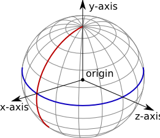

CelestialBody¶
- class CelestialBody¶
Represents a celestial body (such as a planet or moon).
- name¶
Gets the name of the body.
Return type: string
- satellites¶
Gets a list of celestial bodies that are in orbit around this celestial body.
Return type: list ( CelestialBody )
- mass¶
Gets the mass of the body, in kilograms.
Return type: double
- gravitational_parameter¶
Gets the standard gravitational parameter of the body in \(m^3s^{-2}\).
Return type: double
- surface_gravity¶
Gets the acceleration due to gravity at sea level (mean altitude) on the body, in \(m/s^2\).
Return type: double
- rotational_period¶
Gets the rotational period of the body, in seconds.
Return type: double
- rotational_speed¶
Returns the rotational speed of the body, in radians per second.
Return type: double
- equatorial_radius¶
Gets the equatorial radius of the body, in meters.
Return type: double
- sphere_of_influence¶
Gets the radius of the sphere of influence of the body, in meters.
Return type: double
- has_atmosphere¶
True if the body has an atmosphere.
Return type: bool
- atmosphere_pressure¶
Gets the pressure of the atmosphere at sea level, in Pascals. Returns 0 if the body has no atmosphere.
Return type: double Note
Calculated using KSPs stock aerodynamic model.
- atmopshere_density¶
Gets the density of the atmosphere at sea level, in \(kg/m^3\). Returns 0 if the body has no atmosphere.
Return type: double Note
Calculated using KSPs stock aerodynamic model.
- atmosphere_scale_height¶
Gets the scale height of the atmosphere, in meters. Returns 0 if the atmosphere has no atmosphere.
Return type: double Note
Calculated using KSPs stock aerodynamic model.
- atmosphere_max_altitude¶
Gets the maximum altitude of the atmosphere, in meters. Returns 0 if the body has no atmosphere.
Return type: double Note
Calculated using KSPs stock aerodynamic model.
- atmopshere_pressure_at(altitude)¶
Returns the atmospheric pressure, in Pascals, at the given altitude above sea level, in meters. Returns 0 if the body has no atmosphere.
Parameters: altitude (float) – Return type: double Note
Calculated using KSPs stock aerodynamic model.
- atmopshere_density_at(altitude)¶
Returns the density of the atmosphere, in \(kg/m^3\), at the given altitude above sea level, in meters. Returns 0 if the body has no atmosphere.
Parameters: altitude (float) – Return type: double Note
Calculated using KSPs stock aerodynamic model.
- reference_frame¶
Gets the reference frame that is fixed relative to the celestial body.
- The origin is at the center of the body.
- The axes rotate with the body.
- The x-axis points from the center of the body towards the intersection of the prime meridian and equator (the position at 0° longitude, 0° latitude).
- The y-axis points from the center of the body towards the north pole.
- The z-axis points from the center of the body towards the equator at 90°E longitude.
Return type: ReferenceFrame Celestial body reference frame origin and axes. The equator is shown in blue, and the prime meridian in red.
- non_rotating_reference_frame¶
Gets the reference frame that is fixed relative to this celestial body, and orientated in a fixed direction (it does not rotate with the body).
- The origin is at the center of the body.
- The axes do not rotate.
- The x-axis points in an arbitrary direction through the equator.
- The y-axis points from the center of the body towards the north pole.
- The z-axis points in an arbitrary direction through the equator.
Return type: ReferenceFrame
- orbital_reference_frame¶
Gets the reference frame that is fixed relative to this celestial body, but orientated with the body’s orbital prograde/normal/radial directions.
- The origin is at the center of the body.
- The axes rotate with the orbital prograde/normal/radial directions.
- The x-axis points in the orbital anti-radial direction.
- The y-axis points in the orbital prograde direction.
- The z-axis points in the orbital normal direction.
Return type: ReferenceFrame
- position(reference_frame)¶
Returns the position vector of the center of the body in the specified reference frame.
Parameters: reference__frame (ReferenceFrame) – Return type: Vector3
- velocity(reference_frame)¶
Returns the velocity vector of the body in the specified reference frame.
Parameters: reference_frame (ReferenceFrame) – Return type: Vector3
- rotation(reference_frame)¶
Returns the rotation of the body in the specified reference frame.
Parameters: reference_frame (ReferenceFrame) – Return type: Quaternion
- direction(reference_frame)¶
Returns the direction in which the north pole of the celestial body is pointing, as a unit vector, in the specified reference frame.
Parameters: reference_frame (ReferenceFrame) – Return type: Vector3
- angular_velocity(reference_frame)¶
Returns the angular velocity of the body in the specified reference frame. The magnitude of the vector is the rotational speed of the body, in radians per second, and the direction of the vector indicates the axis of rotation, using the right-hand rule.
Parameters: reference_frame (ReferenceFrame) – Return type: Vector3